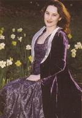

Celtic Lyrics Corner > Artists & Groups > Katie McMahon
|  | Katie McMahon |
| Albums : |
1998 -
After The Morning
2001 - Shine 2003 - Celtic Christmas |
| Also On : |
Former member of
Anúna
The Riverdance soundtrack |